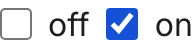
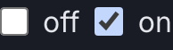

Atom
Checkbox
The native control, given the action colour and a focus ring, and otherwise left alone.
Anatomy
input[type=checkbox]the native box, sized to the small icon stepaccent-colorthe action role, which paints the fill and the tick together
Variants and sizes
State
Checked or not. There is no third value and no indeterminate anywhere in the product.
unchecked
off
checked
on
The empty cells, and why they are empty
No emphasis and no size axis. Repainting a native checkbox by hand buys a shape and loses the platform behaviour that comes free with it, and this product has three checkboxes.
When to use it
On check-in setup, where the operator turns individual questions on and off, and on the cookie consent screen. It is a switch for a thing that already exists, not a choice between alternatives.
The rule, and the anti rule
Do this. Use it for an independent yes or no. Three questions that can each be on or off are three checkboxes.
Not this, use Radio option instead. For one choice out of several, use a Radio option, which makes the alternatives visible and mutually exclusive.
States
The tick and the fill both come from accent-color, which is why the computed color property reports the user agent black: the visible colour is not on that property. Worth knowing before trying to consolidate a value nobody set.
One delta, and it is a platform behaviour rather than a rule of ours. Each pair is the light theme on the left and the dark theme on the right, captured from the live component on this page, not drawn. They are re-taken by the check at step 9, which fails on a byte shift.


checkedThe named difference: the fill and the tick both come fromaccent-color, which is why the computed color property still reports the user agent blackRe-take these with node scratchpad/states.js /tmp/jobs.json against a local server on port 8931.
Technical
| Level | 1, atom |
|---|---|
| File | design/system/components/checkbox.css |
| Roles it reads | --bg-action, --color-focus, --opacity-disabled |
| In the product | 3 of 99 screens |
| In colour | 0 screens: none yet, it waits for the roll-out at stage 12 |
Markup to copy
<div class="kit-row"><label style="display:flex;gap:var(--space-2);align-items:center"><input type="checkbox" checked> Question one</label> <label style="display:flex;gap:var(--space-2);align-items:center"><input type="checkbox"> Question two</label></div>